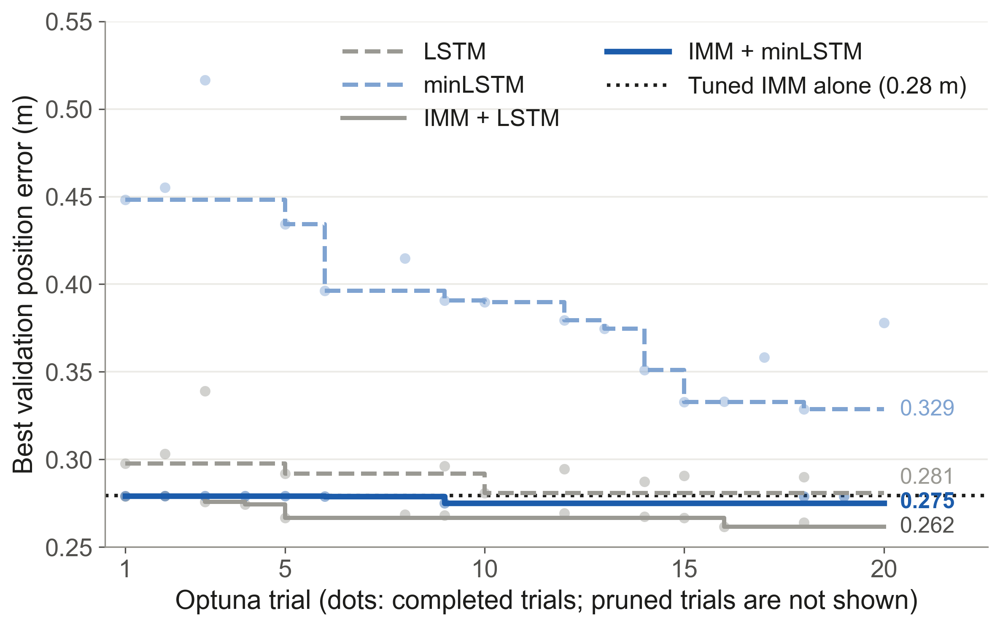
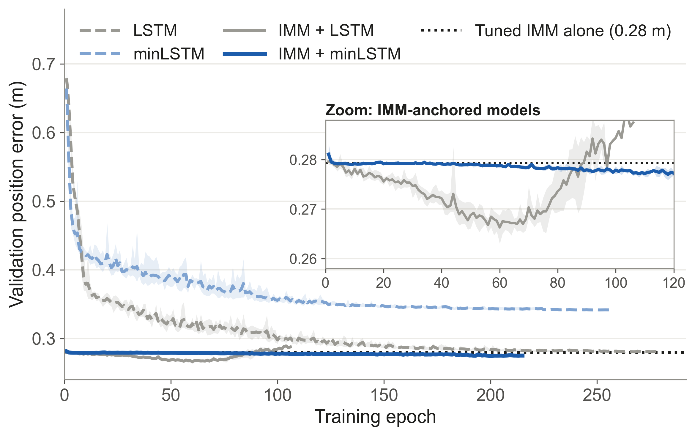
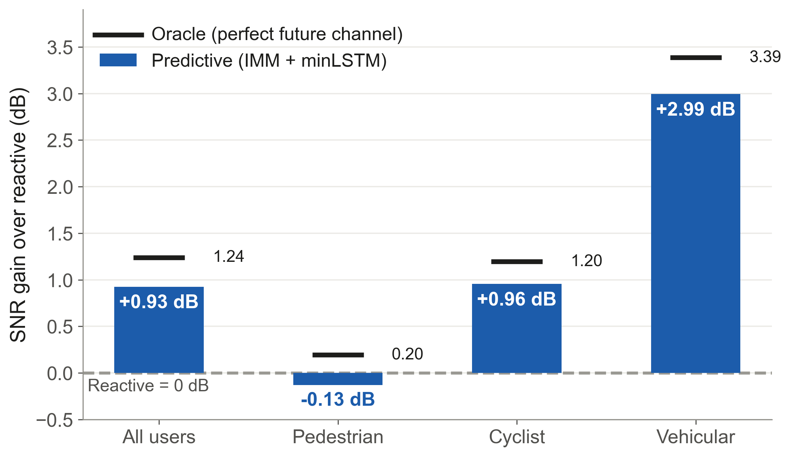
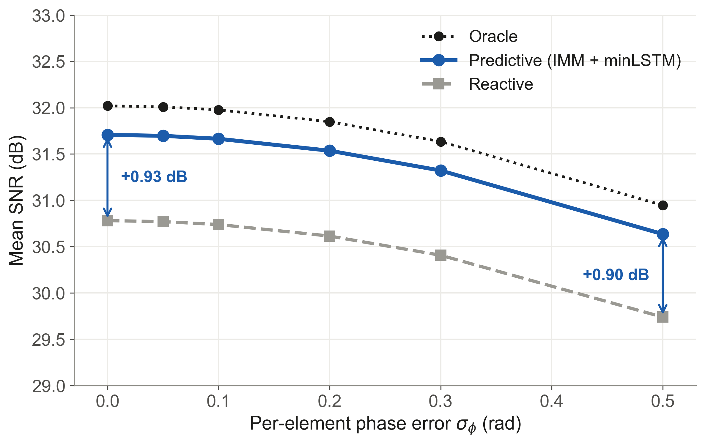
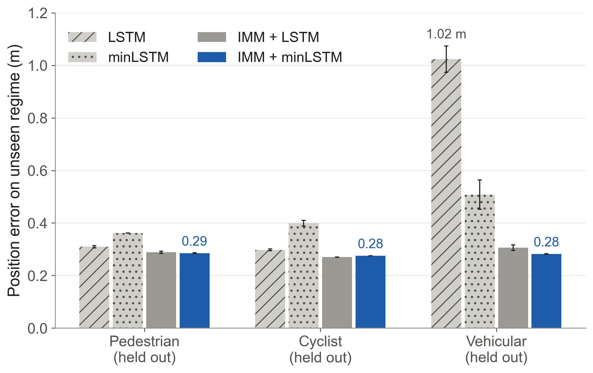

1Motivation
- Large mmWave/THz arrays form narrow beams, about 1.6° with 64 antennas
- Reactive beamforming aims where the user was, so the beam goes stale as the user moves
- Re-sweeping all beams costs airtime; predictive beamforming aims at the next position instead
2Experimental Setup
- 600 synthetic trajectories, 200 slots of 0.1 s; split by whole trajectory (420 / 90 / 90)
- Pedestrian (0.8–2 m/s), cyclist (3–8 m/s), vehicular (8–20 m/s); 0.5 m position noise
- Fair test: every beam is scored on the true next-slot channel; the oracle knows it (upper bound)
3Training The Predictor
The IMM Anchor Starts Ahead.

- IMM-anchored models start at the IMM’s 0.28 m on trial 1; they only learn a small correction
- Direct minLSTM must learn motion from scratch: 0.45 → 0.33 m, still improving at trial 20
Training Is Stable Across Seeds.

- Direct networks start near 0.68 m and need 150–190 epochs; minLSTM stops at 0.34 m
- Anchored models start at the IMM; IMM + LSTM dips to 0.266 m then overfits, IMM + minLSTM never falls behind the IMM
4Prediction Accuracy
| One-step predictor | Test error | Params |
|---|---|---|
| Hold last position | 0.89 m | – |
| Tuned IMM | 0.280 m | – |
| LSTM (direct) | 0.285 m | 200k |
| minLSTM (direct) | 0.350 m | 100k |
| IMM + LSTM | 0.267 m | 201k |
| IMM + minLSTM (ours) | 0.279 m | 51.7k |
- Direct networks do not beat a tuned IMM; anchored on it, they do
- Re-run check: retrained on a laptop GPU, all four networks reproduce these errors within 2 mm (5 seeds each)
5Results: SNR And Hardware
Predictive Beats Reactive, Most At High Speed.

- +0.93 dB overall, of 1.24 dB achievable; vehicles +2.99 dB (of 3.39), cyclists +0.96 dB
- Pedestrians barely move per slot: −0.13 dB (0.20 dB available)
- Cheap hardware is enough: one-RF-chain hybrid DFT recovers 75% of the achievable gain; fully-digital MRT with 64 RF chains recovers 42%
The Gain Survives Hardware Phase Error.

- 0.5 rad of phase error costs every method about 1.07 dB; the predictive gain only moves from +0.93 to +0.90 dB
6Robustness
Anchoring On The IMM Keeps Learning Safe.

- On their own, LSTM fails on unseen vehicles (1.02 m) and minLSTM reaches 0.51 m
- IMM + minLSTM stays at 0.28–0.29 m for every held-out type, the same as the IMM: the anchor removes the failure mode
7Overhead And Compute
- Misalignment at 128 antennas: 0.51 beamwidths reactive vs 0.17 predictive
- 3 predicted beams reach 31.99 dB, within 0.03 dB of a full 128-beam sweep
- Outage (SNR > 3 dB below oracle): 10.7% reactive vs 3.0% predictive
- With beams refreshed every 3.6 ms, a 128-beam sweep leaves no time for data; 3 predicted beams still deliver 10.3 b/s/Hz
~4×
fewer operations per step than LSTM
¼
of the LSTM’s parameters
0.22 ms
per slot on a CPU, vs a 100 ms slot
Key Takeaways
1
Safe learning. An IMM anchor keeps the learned predictor accurate on motion it never saw.
2
Lightweight AI. minLSTM has ¼ of an LSTM’s parameters and a constant cost per slot.
3
Right hardware. One-RF-chain hybrid DFT recovers the most gain on the cheapest hardware.
4
Less overhead. Full-sweep SNR from about 40× fewer beam measurements.